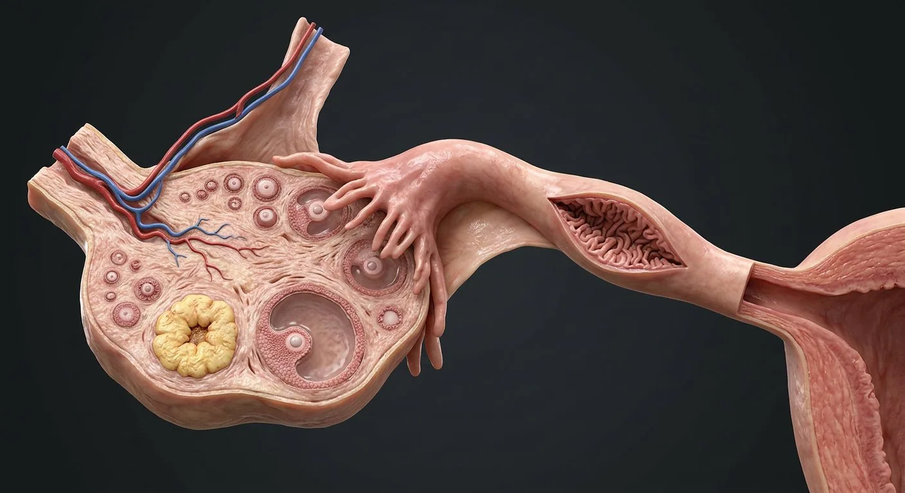

ORGAN → UNDER THE LENS
Ovarian follicle cutaway
Tap to compare the organ region with a tissue-level teaching illustration.
Read about Growing follicles ↓From follicular cortex to ampulla: the ovary, fimbriae, tubal mucosal folds and the hidden routes of fertilization.

Suspensory ligament (IP ligament)Growing folliclesPrimordial folliclesInfundibulum & abdominal ostiumOvarian cortexFimbriaeOvarian hilum / mesovariumOvarian ligamentOvarian surface & tunica albugineaOvarian medullaDominant antral follicleCorpus luteumAmpullaTubal muscularisTubal mucosal folds & ciliaTubal isthmusIntramural (interstitial) tubeFollow the oocyte from dominant follicle across a peritoneal gap to the fimbriae and ampulla, then trace the tube to the uterine cornu.
These are educational cutaways, not literal magnifications of an organ pixel or laboratory slides. A ring marks the approximate tissue region; part-specific lines appear only where identifiable.
Tap to compare the organ region with a tissue-level teaching illustration.
Read about Growing follicles ↓These 17 structures describe anatomy related to the chapter’s regional illustration. Each entry separates location, function and a clinical point.
Outer ovarian zone with follicles at several stages.
What it doesHouses the oocyte reserve.
Clinical connectionCortical tissue is considered in fertility-preserving surgery.
Central vascular stromal zone.
What it doesSupports vessels, nerves and the hilum.
Clinical connectionOvarian pedicle bleeding arises at the hilum.
Small oocyte with flat granulosa cells in outer cortex.
What it doesDormant ovarian reserve pool.
Clinical connectionReserve declines with age and treatment exposure.
Developing granulosa and theca layers, then antrum.
What it doesEstrogen synthesis and oocyte maturation.
Clinical connectionFollicle tracking uses size, not a diagnosis of oocyte quality.
Large fluid-filled preovulatory follicle.
What it doesReleases a secondary oocyte after the LH surge.
Clinical connectionFunctional cysts may arise from follicular persistence.
Yellow luteinized structure after ovulation.
What it doesProduces progesterone during luteal phase.
Clinical connectionCorpus luteum cysts can mimic adnexal pathology.
Ovary has surface epithelium over dense connective tissue.
What it doesProtective covering; ovulation ruptures surface locally.
Clinical connectionThe ovarian surface is not covered by peritoneum.
Mesovarium connects ovary to broad ligament; vessels enter at hilum.
What it doesNeurovascular gateway.
Clinical connectionPreserve vascular supply when possible in adnexal surgery.
Peritoneal fold from ovary toward pelvic sidewall carrying vessels.
What it doesConveys ovarian artery and vein.
Clinical connectionUreter lies close to ovarian pedicle during ligation.
Fibrous connection from uterine cornu to ovary.
What it doesAnchors ovary medially.
Clinical connectionDistinct from the vascular suspensory ligament.
Fringed distal projections adjacent to ovary.
What it doesSweep oocyte toward tubal abdominal ostium.
Clinical connectionThe tube opens to the peritoneal cavity here.
Funnel-shaped distal end of tube.
What it doesReceives oocyte from peritoneal cavity.
Clinical connectionTubal disease here may impair pickup.
Wide, folded lateral tubal segment.
What it doesUsual site of fertilization.
Clinical connectionA common site of tubal ectopic implantation.
Narrow muscular medial tubal segment.
What it doesTransports gametes/embryo toward uterus.
Clinical connectionNarrow lumen can be affected by scarring.
Short segment inside uterine myometrium.
What it doesConnects tube to uterine cavity.
Clinical connectionInterstitial ectopic gestation can expand before recognition.
Highly folded ciliated and secretory epithelium in tube.
What it doesCiliary motion and muscular peristalsis aid transport.
Clinical connectionInflammation damages cilia and increases ectopic risk.
Circular and longitudinal smooth-muscle layers of uterine tube wall.
What it doesMoves luminal contents with ciliary activity.
Clinical connectionInflammation/scarring can impair transport.
These 3 additional entries give anatomical context. They are deliberately not assigned a photographic pin on the regional image.
Vascular steroidogenic layer surrounding developing ovarian follicle.
What it doesSupplies androgen precursors under LH stimulation.
Clinical connectionWorks with granulosa aromatase in estrogen synthesis.
Follicular epithelial cells surrounding oocyte and antrum.
What it doesNourish oocyte and aromatize thecal androgen.
Clinical connectionFollowing ovulation contribute to corpus luteum.
Glycoprotein coat immediately surrounding oocyte.
What it doesSupports sperm binding and early embryo protection.
Clinical connectionPersists through initial cleavage stages.
Short answers grounded in the structures described above. Use the illustrated guide for anatomical context.
After release from an ovarian follicle, the oocyte is taken up near the fimbriae and usually enters the uterine tube before moving toward the uterus.
The ampulla, a wider segment of the uterine tube, is the most common site of fertilization.
Outer ovarian zone with follicles at several stages. Function: Houses the oocyte reserve.
Small oocyte with flat granulosa cells in outer cortex. Function: Dormant ovarian reserve pool.
Function: Releases a secondary oocyte after the LH surge. Large fluid-filled preovulatory follicle.
Follow these connected structures and body systems in the illustrated atlas.
 Egg cell · oocyte & ovulationA separate egg chapter: primary versus secondary oocyte, meiosis, zona pellucida, corona radiata and ovulation.↗
Egg cell · oocyte & ovulationA separate egg chapter: primary versus secondary oocyte, meiosis, zona pellucida, corona radiata and ovulation.↗ Uterus — layers & cavityThe womb in cross-section: endometrium, junctional zone, myometrium, cavity, isthmus and the key clinical boundaries.↗
Uterus — layers & cavityThe womb in cross-section: endometrium, junctional zone, myometrium, cavity, isthmus and the key clinical boundaries.↗ Pelvic support & surgical planesThe surgical map: ureter under uterine artery, uterosacral and cardinal supports, broad ligament folds, ovarian pedicle and pelvic floor.↗
Pelvic support & surgical planesThe surgical map: ureter under uterine artery, uterosacral and cardinal supports, broad ligament folds, ovarian pedicle and pelvic floor.↗ Female reproductive systemA cyclic system: ovulation, fertilisation in the tube, implantation in the endometrium.↗
Female reproductive systemA cyclic system: ovulation, fertilisation in the tube, implantation in the endometrium.↗General anatomy references and related source chapters for continued study. These links do not make the digital illustrations clinical images or certify every anatomical variant.
This educational page is not medical advice and has not undergone formal clinical peer review. Spotted an error? Contact the editor.
Open the realistic interactive plate, label lines, focus view and self-test.